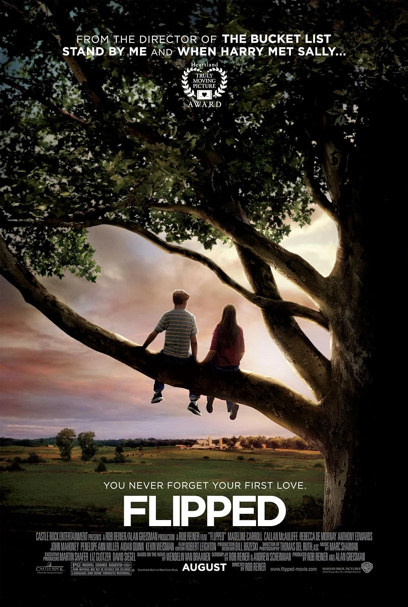
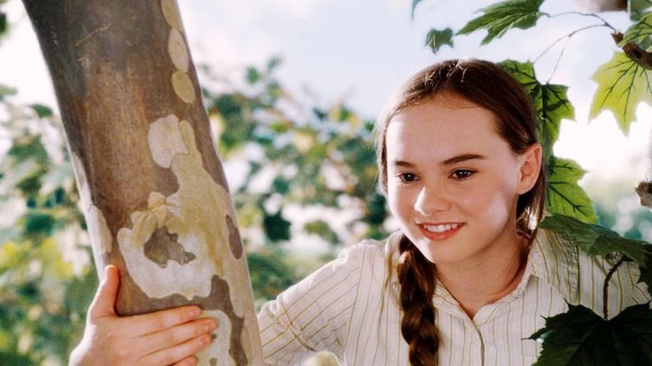
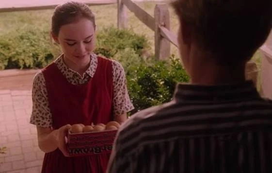
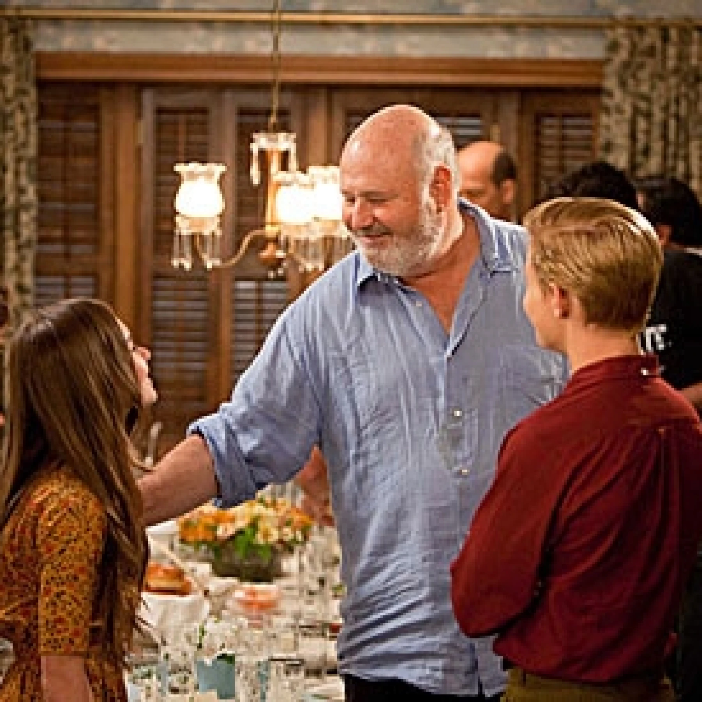

2010 · Regie: Rob Reiner · Drehbuch: Rob Reiner & Andrew Scheinman
Genre: Coming-of-Age / Romanze · Laufzeit: 90 Minuten
☕ Lesezeit: ca. 5 Minuten

Es gibt schönere Gründe, einen Film zum ersten Mal zu sehen. Als Rob Reiner im Dezember starb, plötzlich und auf eine Art, über die ich hier nicht schreiben will, ging es mir wie vermutlich vielen: Ich habe angefangen, seine Filmografie durchzugehen. Nicht als Pflichtprogramm, sondern weil einem in solchen Momenten erst auffällt, wie viel man von einem Menschen gesehen hat, ohne je bewusst über ihn nachgedacht zu haben. Harry und Sally. Stand by Me. Die Braut des Prinzen. Misery.
Bei Verliebt und ausgeflippt bin ich hängen geblieben, seiner Verfilmung des Jugendromans Flipped von Wendelin Van Draanen. Ganz ohne Erwartung bin ich nicht reingegangen, ich wusste, dass der Film eine kleine, aber ziemlich treue Kult-Gefolgschaft hat, und genau deshalb war ich neugierig. Ausgeliehen habe ich ihn in der Bibliothek, was ganz gut zu einem Film passt, der in Deutschland nie im Kino lief und den man sich irgendwo abholen muss. Neunzig Minuten später saß ich mit feuchten Augen da und wusste, dass ich einen neuen Lieblingsfilm gefunden habe.
Kleine Warnung: Ich erzähle grob, wohin sich die Sache entwickelt. Das Ende lasse ich aus.
1957, zweite Klasse. Bryce Loski zieht mit seinen Eltern ins Haus gegenüber der Familie Baker. Juli Baker sieht ihn einmal an und weiß sofort: Das ist es. Bryce weiß in derselben Sekunde auch etwas, nämlich das genaue Gegenteil, und verbringt die nächsten sechs Jahre damit, Juli auf Abstand zu halten. Juli klettert derweil auf Bäume, züchtet Hühner und gibt die Hoffnung nicht auf.
Erzählt wird das aus beiden Perspektiven. Der Film zeigt dieselbe Szene erst aus Bryce' Blick und spult dann zurück, um sie noch einmal aus Julis Blick zu zeigen. Klingt nach einem Gimmick, das sich schnell abnutzt. Tut es aber nie, weil die beiden Fassungen einer Szene sich nicht widersprechen, sie ergänzen sich zu etwas Drittem, das keiner der beiden allein sieht.

Ich mag gut gemachte Coming-of-Age-Filme prinzipiell sehr. Stand by Me, ausgerechnet auch von Reiner, gehört zu den Filmen, die bei mir immer funktionieren. Insofern war die Grundvoraussetzung schon mal da. Nur reicht die allein nicht. Es gibt genug Filme dieser Sorte, die mich mit einem freundlichen Schulterzucken zurücklassen.
Was ich hier hatte, und ich tue mich ehrlich schwer damit, das in Worte zu fassen, war ein durchgehendes Gefühl von Reminiszenz. Dabei finde ich mich in keiner der beiden Hauptfiguren wirklich wieder. Ich war kein Bryce und schon gar keine Juli. Trotzdem lief den ganzen Film über bei mir etwas mit, das sich anfühlte wie Erinnerung an etwas, das ich so nie erlebt habe. Vielleicht liegt es an der Beiläufigkeit, mit der Reiner diese Kindheit inszeniert. Es passiert nichts Großes. Es gibt keinen Sommer, der alles verändert, keinen toten Freund, kein Geheimnis. Es gibt Hausaufgaben, ein Abendessen, einen Baum und Eier, die niemand haben will. Und genau darin steckt anscheinend mehr Wiedererkennung als in jeder dramatischen Zuspitzung.

Der eigentliche Grund, warum ich den Film so hoch aufhänge, ist aber Bryce. Auf dem Papier ist er über weite Strecken ein ziemlicher Mistkerl. Er tut so, als wäre er mit einem Mädchen zusammen, nur um Juli loszuwerden. Er wirft die Eier weg, die sie ihm jahrelang geschenkt hat, statt einfach zu sagen, dass seine Eltern sie nicht wollen. Und er steht daneben und schweigt, als sein Freund Garrett sich über Julis geistig behinderten Onkel lustig macht. Das ist der Moment, an dem der Film seinen Hauptdarsteller wirklich in die Pfanne haut.
Ein schlechterer Film hätte daraus einen Antagonisten gebaut, den Juli am Ende bekehrt. Reiner macht etwas Schwierigeres. Er zeigt uns dieselben Szenen aus Bryce' Kopf, und da drin ist er kein Fiesling, er ist ein zwölfjähriger Feigling. Er weiß, dass er sich falsch verhält, und schafft es trotzdem nicht, den Mund aufzumachen. Wer erinnert sich nicht an mindestens eine Situation dieser Art?
Das ist für mich der Kern: Wir alle haben als Kinder Dinge getan, für die wir uns heute in den Allerwertesten beißen könnten. Der rückblickende Blick auf die eigene Kindheit ist selten schmeichelhaft, weil man sich mit vielen der eigenen Entscheidungen schlicht nicht mehr identifizieren kann. Der Film balanciert genau auf diesem schmalen Grat und schafft es, dass man mit beiden Figuren mitfühlt, auch wenn sie sich gegenseitig verletzen. Deshalb habe ich mich so an die beiden gebunden gefühlt. Und wenn ein Film mir am Ende eine Träne abringt, dann muss ich das würdigen.
Erwähnen muss ich außerdem John Mahoney als Großvater Chet, dessen ruhige Wärme den ganzen Film zusammenhält.

Erfolgreich war der Film nicht. 14 Millionen Dollar Budget, weltweit rund 3,8 Millionen wieder eingespielt, davon nur 1,7 in den USA, bei Rotten Tomatoes ein müdes Ergebnis knapp über der Hälfte, bei Metacritic 45 von 100. Ein deutscher Kinostart fand gar nicht erst statt, hier landete er 2011 direkt auf DVD. Erst über Heimkino und Streaming hat er sich über die Jahre seine Fangemeinde erarbeitet.
Ein Wort zum deutschen Titel: Verliebt und ausgeflippt ist eine Frechheit. Ausgeflippt ist in diesem Film exakt niemand. Das englische Flipped meint das Umschlagen, die wechselnden Perspektiven und die kippenden Gefühle, und es beschreibt die Struktur des Films perfekt. Der deutsche Titel klingt nach einer Teenie-Klamotte aus dem Nachmittagsprogramm und hat vermutlich mit dafür gesorgt, dass der Film hier komplett unter dem Radar geblieben ist.
Verliebt und ausgeflippt ist ein kleiner, unspektakulärer Film über zwei Kinder, die sich sechs Jahre lang gegenseitig missverstehen. Er tut nichts, was man nicht schon hundertmal gesehen hätte, und er trifft mich trotzdem härter als fast alles, was ich dieses Jahr geschaut habe. Weil er seine beiden Figuren mit gleicher Ernsthaftigkeit behandelt, weil er niemanden zum Monster macht und weil er versteht, dass die peinlichsten Erinnerungen an die eigene Kindheit meistens die ehrlichsten sind.
Meine Wertung: 10/10. Er reiht sich damit in die kleine Liste meiner Lieblingsfilme ein, direkt neben The Man from Earth, was zwei unterschiedlichere Filme kaum sein könnten. Danke, Rob Reiner.
Wem Verliebt und ausgeflippt gefallen hat, dem empfehle ich: Stand by Me (1986), Boyhood (2014) und Past Lives (2023).